La mesa de trabajo
Pestañas y dos paneles, comentarios, búsqueda en todo el libro y objetivos de palabras: lo que usas a diario.
El vídeo se reproduce desde YouTube, que solo se carga cuando le das a reproducir. Verlo en YouTube


Guarda cada capítulo como un archivo de texto normal, en una carpeta tuya, y además te ayuda a revisar lo que escribes: te señala las palabras repetidas, las rachas de frases con la misma longitud o el mismo arranque y los párrafos que se vuelven monótonos.
Tiene un modo sin distracciones con vídeo y sonidos de fondo, para que solo quedéis tú y el texto. Funciona sin conexión, y si quieres puedes sincronizar tus proyectos con Dropbox, pCloud o Google Drive. Está en español e inglés, para Mac y Windows. ¡Y es gratis!
Descargar para Mac versión 1.98.5 Descargar para Windows versión 1.102.0
Sin cuenta y sin suscripción. La versión de Mac necesita un chip de Apple (M1 o posterior). Corylus también funciona en iPhone, iPad y Android, pero esas versiones aún no están en las tiendas.
Corylus es gratis. Si te sirve, puedes apoyarlo en Ko-fi: paga las licencias para que se instale sin avisos. Mira qué paga el apoyo
El tráiler: un capítulo en Corylus, ese mismo capítulo como archivo en el disco y el resto del programa, en menos de dos minutos.
El vídeo se reproduce desde YouTube, que solo se carga cuando le das a reproducir. Verlo en YouTube
Casi todos los programas para obra larga guardan tu manuscrito en una base de datos, en un paquete o en una cuenta en la nube, y solo esa aplicación sabe abrirlo. Eso funciona hasta que la aplicación deja de mantenerse, cambia de precio o no arranca en tu próximo ordenador.
Corylus guarda cada documento como un archivo Markdown normal, en una carpeta normal. Es el formato con el que trabaja a diario, así que no hay nada que exportar. Abre la carpeta con Corylus en marcha y ahí están tus capítulos, legibles con cualquier editor de texto. Corylus también mantiene un índice de búsqueda, y lo reconstruye a partir de esos archivos cuando hace falta.
Si Corylus desapareciera mañana, tu obra seguiría siendo archivos Markdown en una carpeta normal, y cualquier editor de texto los abre.
Mi novela.corylus/
├── settings.json
├── Manuscrito/
│ ├── Capitulo I.md
│ ├── Capitulo II.md
│ └── Capitulo III.md
├── StoryBible/
│ ├── Personajes/
│ └── Lugares/
└── .corylus/
└── snapshots/
└── 01JCB7R2M8X4QYV3T9K5N6PZ0A/
└── 2026-11-02T09-14-22.md
A la izquierda, Corylus. A la derecha, el mismo capítulo como archivo en tu disco, que se abre con cualquier editor de texto.
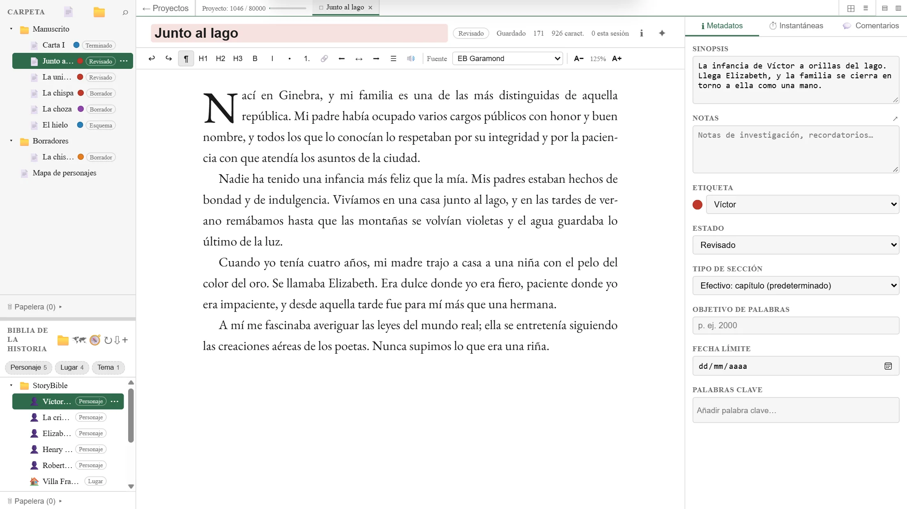
---
id: 01M7YNB16BV4FQE2R2PKK05NVJ
rev: {QSEEBQJA: 1}
title: "Junto al lago"
synopsis: "La infancia de Víctor a orillas del lago. Llega Elizabeth, y la familia se cierra en torno a ella como una mano."
label: red
status: revised
---
Nací en Ginebra, y mi familia es una de las más distinguidas de aquella república. Mi padre había ocupado varios cargos públicos con honor y buen nombre, y todos los que lo conocían lo respetaban por su integridad y por la paciencia con que atendía los asuntos de la ciudad.
Nadie ha tenido una infancia más feliz que la mía. Mis padres estaban hechos de bondad y de indulgencia. Vivíamos en una casa junto al lago, y en las tardes de verano remábamos hasta que las montañas se volvían violetas y el agua guardaba lo último de la luz.
…
Un recorrido por todo el programa. Todo viene en la descarga gratuita. Algunas partes, como la gramática o las voces naturales, son descargas adicionales que eliges desde dentro de Corylus.
Vídeos cortos, cada uno sobre una parte de Corylus, grabados con libros de ejemplo. Cada uno está también junto a la parte de esta página que enseña. Los he escrito yo; la voz que narra es sintética.
En Corylus una novela es un árbol de carpetas, capítulos y escenas que ves en la Carpeta, a la izquierda. Cada pieza es un archivo propio.
Pestañas y dos paneles, comentarios, búsqueda en todo el libro y objetivos de palabras: lo que usas a diario.
El vídeo se reproduce desde YouTube, que solo se carga cuando le das a reproducir. Verlo en YouTube
Elige una carpeta, o unos cuantos capítulos, y léelos seguidos como una sola página larga. También puedes editar ahí, y cada capítulo se sigue guardando en su propio archivo.
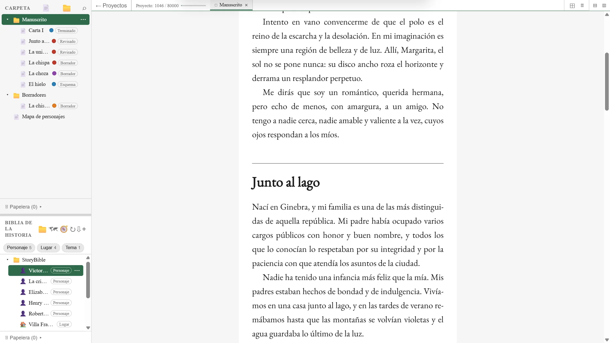
Selecciona un pasaje y déjale una nota. Respóndela, dala por resuelta o bórrala. El comentario sigue a su pasaje mientras editas. Su texto se guarda en un archivo aparte, y en el capítulo solo queda una marca invisible donde está el comentario.
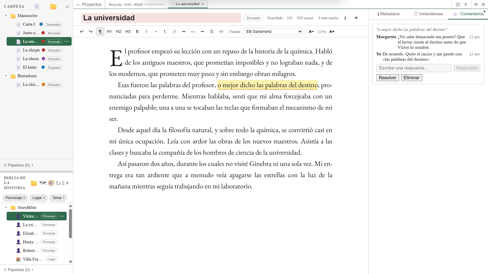
Ponle a un capítulo o al libro entero un objetivo de palabras y mira el progreso mientras escribes, junto con las palabras que llevas en esta sesión. Estadísticas del proyecto cuenta palabras, frases y párrafos, calcula páginas y tiempo de lectura y te enseña las palabras que más usas.
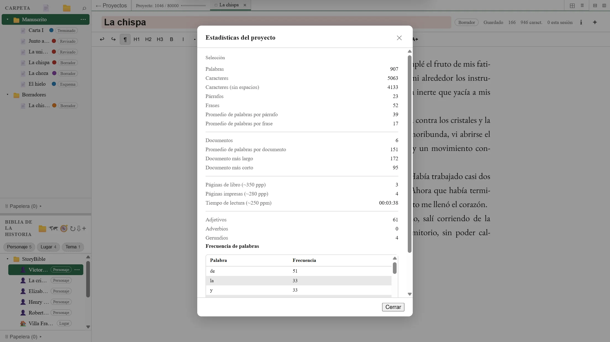
Arrastra capítulos y escenas para ordenarlos. Abre varios a la vez en pestañas, divide la ventana para tener tus notas junto al capítulo o saca una pestaña a su propia ventana.
Cada capítulo lleva una sinopsis, notas, una etiqueta y un estado, que editas en el Inspector, a la derecha. Se guardan al principio del propio archivo del capítulo, donde cualquier editor de texto puede leerlos.
Busca y reemplaza dentro de un capítulo, distinguiendo mayúsculas o palabras completas si quieres. Busca una frase en todo el proyecto, con tildes o sin ellas, y filtra los resultados por etiqueta, estado o carpeta.
Dos guiones se convierten en raya y tres puntos en puntos suspensivos. Las comillas rectas se cambian solas, y en un documento en español pasan a ser « ». Un solo deshacer te devuelve exactamente lo que tecleaste.
El Tablero y el Esquema muestran los mismos capítulos desde más lejos, en el orden de la Carpeta.
La Carpeta, el Tablero y el Esquema sobre los mismos archivos de texto, y cómo traer un libro desde Scrivener o Word.
El vídeo se reproduce desde YouTube, que solo se carga cuando le das a reproducir. Verlo en YouTube
Los capítulos de una carpeta como fichas en una cuadrícula, cada una con su título y su sinopsis, o con sus primeras líneas si todavía no tiene sinopsis.
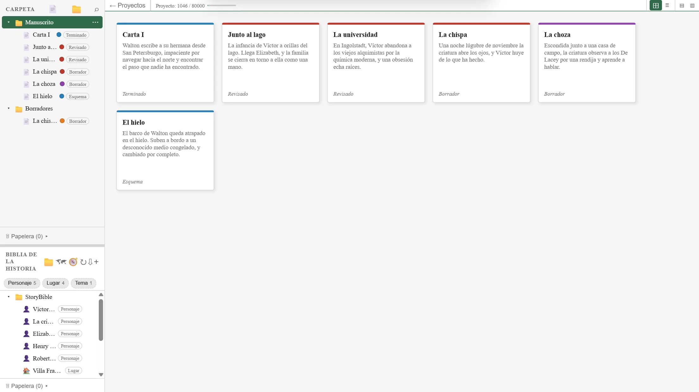
Los mismos capítulos en una tabla, con su título, sinopsis, etiqueta, estado y número de palabras. Cualquiera de ellos se cambia ahí mismo, en la tabla.
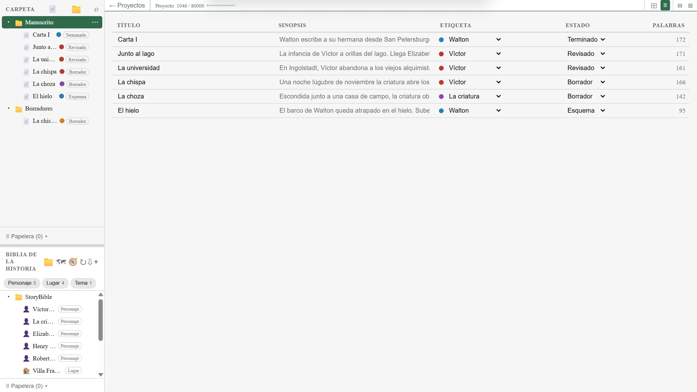
Elige una estructura, como los tres actos, Save the Cat o el viaje del héroe, y Corylus la monta en la Biblia de la historia: una carpeta con una entrada por cada punto de la estructura. Marca los puntos que ya están escritos y enlaza las escenas que los cumplen. También hay métodos para personajes, escenas, temas y construcción de mundos.
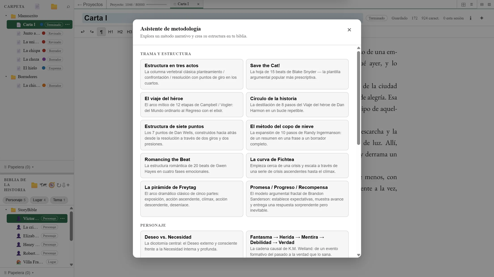
Personajes, lugares, objetos, organizaciones, tramas, escenas, temas, cronologías, lore e investigación. Cada tipo de entrada tiene sus propios campos, y cada entrada es un archivo Markdown en la carpeta StoryBible del proyecto.
Personajes, lugares y sus relaciones, con el reparto de Frankenstein. El mapa saca sus líneas de las entradas, así que no puede contradecirlas.
El vídeo se reproduce desde YouTube, que solo se carga cuando le das a reproducir. Verlo en YouTube
Ponle retrato a un personaje y rellena lo que importa: lo que quiere y lo que necesita, su herida, la mentira que se cree, su arco. Escribe [[ para enlazar cualquier otra entrada por su nombre. Los enlaces sobreviven a los cambios de nombre, y cada entrada muestra dónde se la menciona.
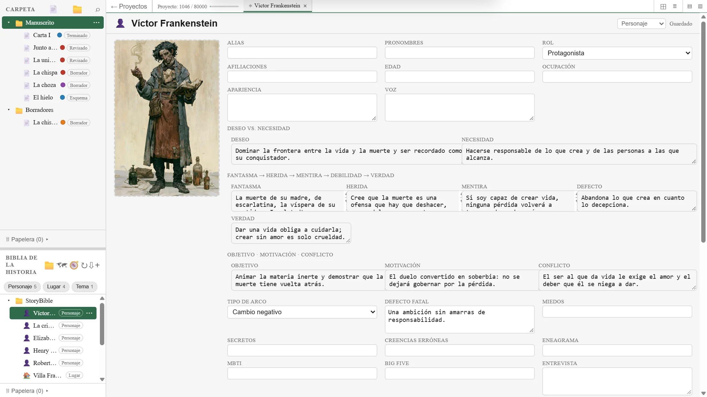
Una relación se escribe una vez y aparece en las dos entradas, y cada extremo puede tener su propio nombre: «creador de» desde Victor, «creado por» desde la Criatura. En un mapa de relaciones las líneas salen de las propias entradas, así que el mapa y las entradas siempre dicen lo mismo. También hay tableros de escenas y paneles de inspiración con imágenes.
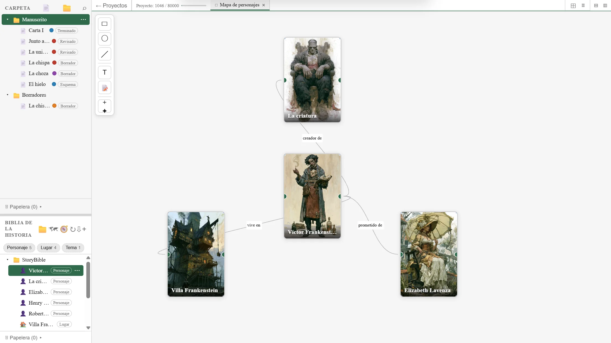
Arrastra a la Biblia de la historia un archivo de Word, OpenDocument, RTF, HTML, Markdown o texto y se convierte en una entrada, con su formato y sus imágenes. Pon etiquetas a las entradas, anídalas como en faccion/rebeldes y filtra el árbol por ellas.
Estas comprobaciones marcan el texto y explican cada marca cuando pasas el ratón por encima. Cada una tiene su propio interruptor, así que activas solo las que quieras. Funcionan en español y en inglés, y en tu ordenador. Casi todas necesitan unos datos de idioma que se descargan una vez, y Corylus te los ofrece al activarlas.
Las marcas de palabras repetidas, ritmo monótono y rimas involuntarias. Todas están apagadas hasta que las enciendes, y ninguna reescribe nada.
El vídeo se reproduce desde YouTube, que solo se carga cuando le das a reproducir. Verlo en YouTube
Corylus marca la palabra que vuelve demasiado pronto, y cuenta juntas las formas de una misma palabra: «bosque» y «bosques», «corrió» y «corría». Tú decides a qué distancia es demasiado pronto y qué palabras no cuentan nunca.
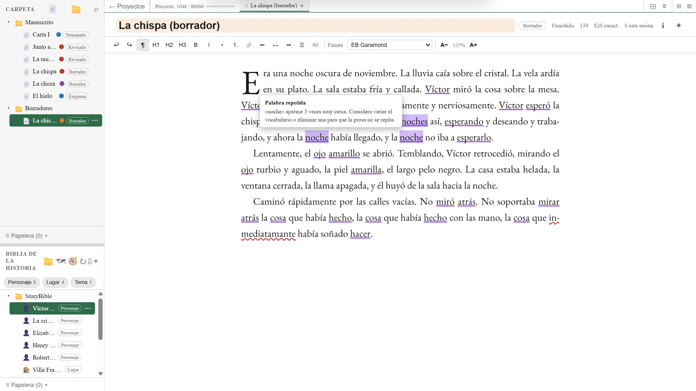
Corylus puede resaltar tres o más frases seguidas que empiezan igual o están construidas igual, tramos de frases casi de la misma longitud y párrafos cargados de sustantivos. También busca preposiciones encadenadas y verbos de percepción que filtran la escena, como «vio» o «sintió», y en español el exceso de gerundios y de pronombres sujeto que sobran.
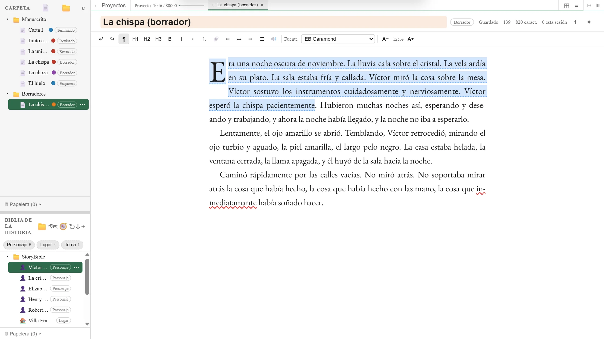
Resalta los adverbios, los adjetivos o los gerundios para ver dónde se apoya demasiado la prosa. Estadísticas del proyecto te da su densidad en todo el libro.
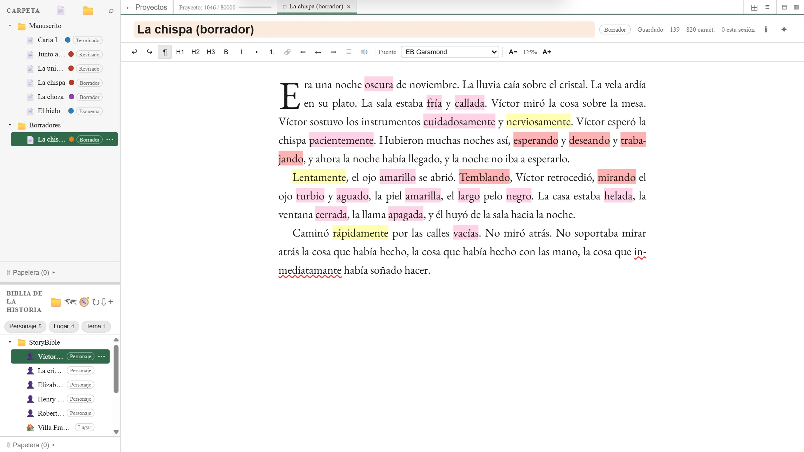
Corylus subraya las palabras cercanas que riman, ese eco que solo se nota al leer en voz alta. En español distingue la rima consonante de la asonante, y tú eliges cuál buscar o si buscar las dos.
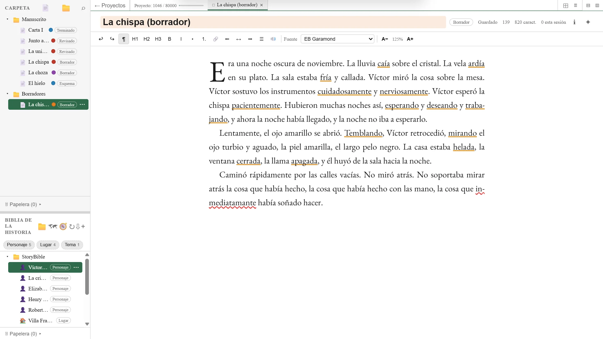
Haz clic derecho en una palabra para ver sus sinónimos y antónimos, y pulsa uno para ponerlo en su lugar. Una ficha de diccionario los ordena por significado, con sus definiciones. El diccionario de sinónimos sale de Wiktionary en español y en inglés, y de Open English WordNet en inglés.
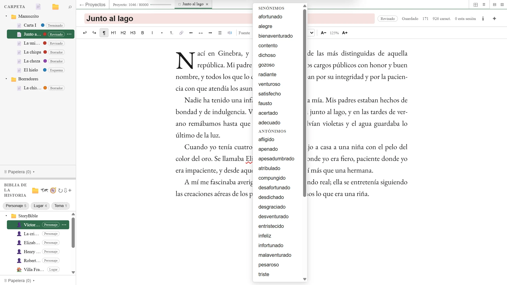
Revisión de gramática y estilo con LanguageTool, en español y en inglés. Se descarga una vez y después funciona en tu ordenador, sin conexión. Necesita Java, y si tu ordenador no lo tiene, Corylus descarga un Java mínimo.
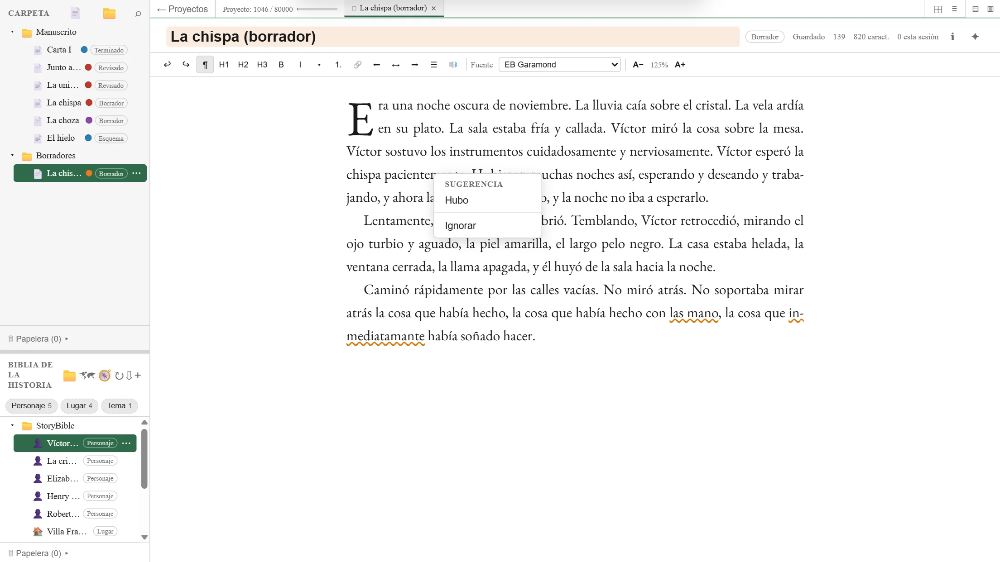
Corylus lee tu texto frase a frase, desde el cursor o desde lo que hayas seleccionado, y resalta la frase por la que va. Usa las voces de tu sistema o descarga voces naturales en español y en inglés que funcionan en tu ordenador. También puedes guardar la lectura como archivo WAV.
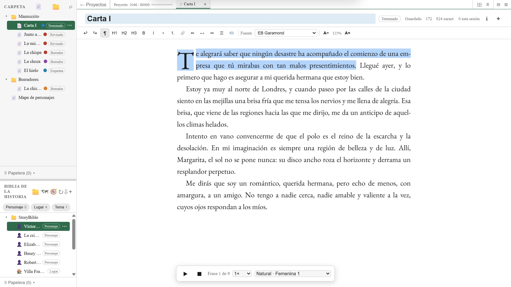
Corylus te lee el capítulo frase a frase y deja iluminada la que está leyendo. Un minuto.
El vídeo se reproduce desde YouTube, que solo se carga cuando le das a reproducir. Verlo en YouTube
Corrector ortográfico Hunspell, con un diccionario propio en cada proyecto para los nombres de tus personajes y las palabras que inventas.
Corylus puede esconderlo todo menos la página, ponerle un vídeo detrás y hacer que llueva mientras escribes.
El modo sin distracciones, un fondo de la galería con un vídeo que se mueve detrás de la página, sonidos ambientales, el modo enfoque y los temas. Con Escape vuelve todo a su sitio.
El vídeo se reproduce desde YouTube, que solo se carga cuando le das a reproducir. Verlo en YouTube
Con un atajo desaparecen la Carpeta, la barra de herramientas y los paneles, y la ventana pasa a pantalla completa. Pon detrás de una página translúcida un vídeo en bucle o una imagen tuya, y elige cuánto se transparenta. Hay una galería de fondos, y su botón «Add to Corylus» muestra el tamaño, el crédito y la licencia y pregunta antes de descargar nada. Esc lo devuelve todo a su sitio.
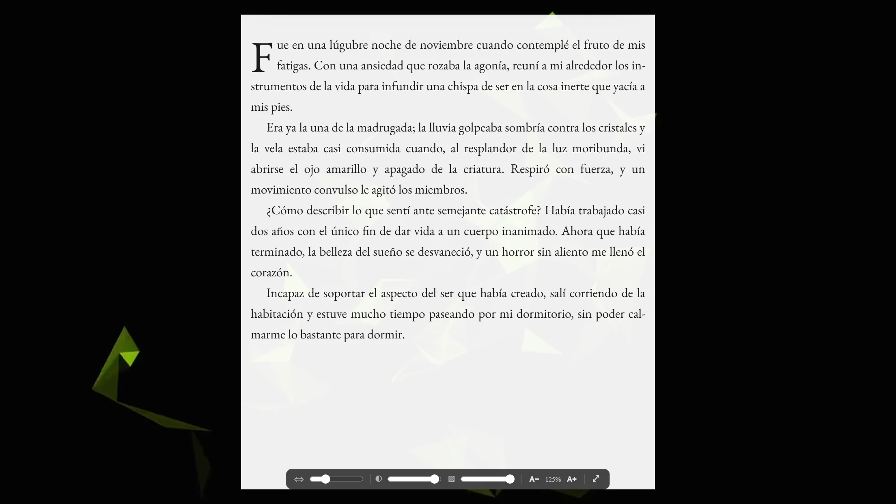
Un mezclador de sonidos de fondo: lluvia, olas, murmullo de cafetería y muchos más, cada uno con su volumen. Guarda las mezclas que te gusten y ponlas o páralas desde la barra de herramientas, también en el modo sin distracciones. Los sonidos son una sola descarga.
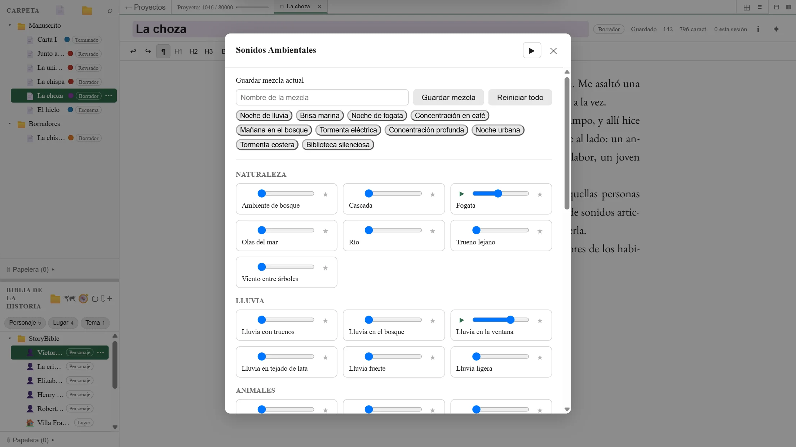
Elige un tema de color para la ventana, entre ellos Nord, Solarized, Dracula y dos de alto contraste, y aparte un color de página: blanco, sepia, pergamino o noche. Los estilos de tipografía fijan la letra, el interlineado y las sangrías, desde párrafos modernos en bloque hasta un manuscrito a doble espacio para enviar a editoriales, y puedes crear los tuyos. Nada de esto cambia tus archivos.
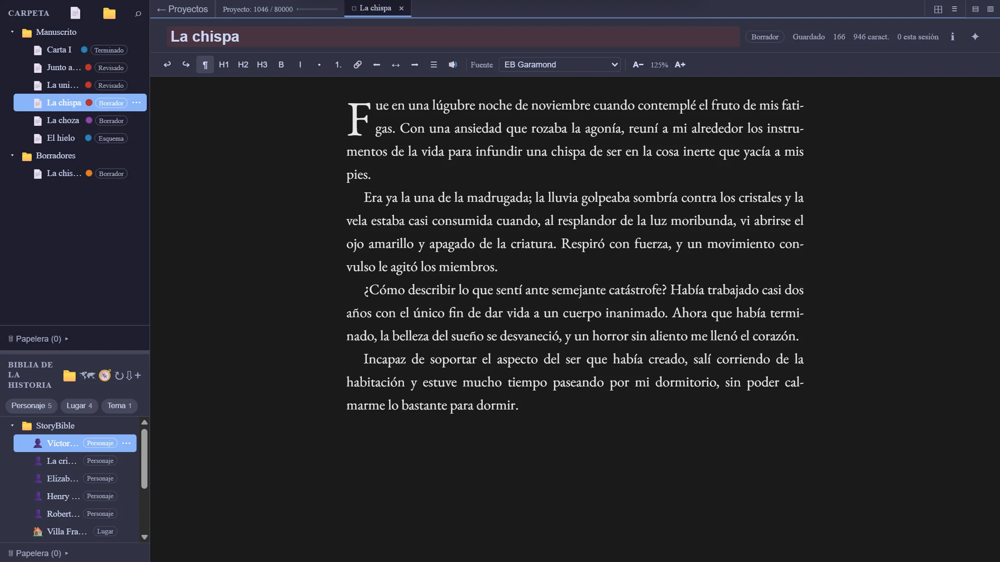
El modo enfoque atenúa todo menos la frase o el párrafo en el que estás. El desplazamiento máquina de escribir mantiene la línea que escribes en el centro de la pantalla.
Tu acompañante es Ogam, un personaje con doce expresiones animadas que vive en una ventanita propia. Se descarga aparte, desde Ajustes → Acompañante, y funciona sin el asistente. Calla mientras escribes y habla en las pausas naturales: al llegar a tu objetivo, tras una pausa larga, al volver a un proyecto o cuando falla una copia de seguridad, una sincronización o una exportación. Mientras revisas, puede enseñarte lo que encontraron las comprobaciones que tienes activas y llevarte a cada sitio. Para ortografía, gramática, sinónimos y espacios dobles te enseña el cambio antes y después. Nunca cambia tu texto por su cuenta; elige un cambio y puedes deshacerlo. «¿Por qué?» te dice por qué habló, y «Menos de esto» o «No me lo menciones más» lo hacen más callado, nunca más hablador. Funciona en tu ordenador, y sus comentarios salen de recuentos y de lo que encontraron tus comprobaciones, nunca de leer tu texto.
Tu proyecto es una carpeta que tú eliges. Corylus añade sus propias copias, en formatos normales que se abren sin él.
Cuatro fallos, desde que el programa desaparece hasta que el ordenador se muere, y lo que sigue en tu disco después de cada uno.
El vídeo se reproduce desde YouTube, que solo se carga cuando le das a reproducir. Verlo en YouTube
Mientras trabajas en un capítulo, Corylus guarda una copia cada diez minutos, y tú puedes sacar una cuando quieras y ponerle nombre. Compara dos cualesquiera para ver qué cambió, o vuelve a una. Cada instantánea es un archivo de texto normal dentro del proyecto.
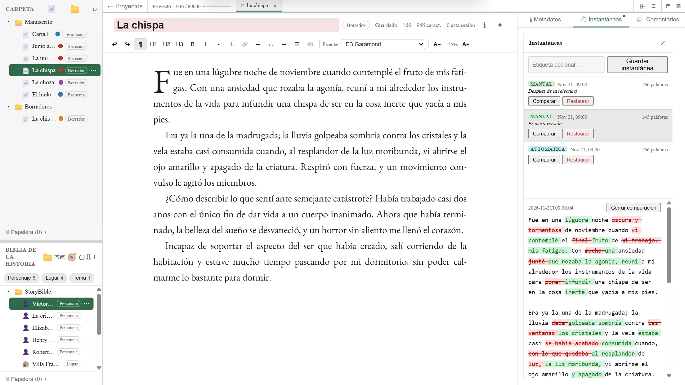
Corylus guarda una copia del proyecto entero en un archivo ZIP con la frecuencia que elijas, y conserva las más recientes. Los Ajustes te las enseñan, y Restaurar pone la que elijas en una carpeta nueva, nunca encima de los archivos que ya tienes. Cada copia puede ir también a tu cuenta en la nube.
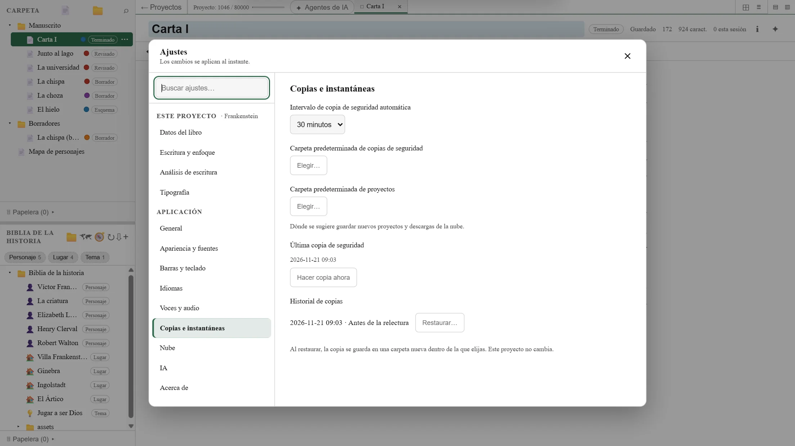
Si escribes en más de un ordenador, conecta tu cuenta de pCloud, Google Drive, Dropbox, OneDrive, Box o Amazon S3 y Corylus mantiene el proyecto al día en todos. Si dos ordenadores cambian el mismo capítulo, no se pierde ninguna de las dos versiones. Tus archivos van directos a tu cuenta, sin ningún servidor de Corylus por medio.
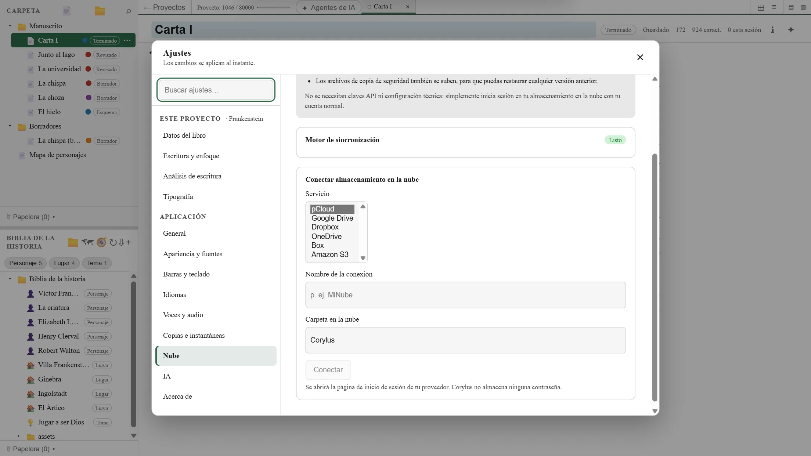
Importa un manuscrito de Scrivener, Word, EPUB o HTML a un proyecto nuevo. Guarda el proyecto entero en un solo archivo .cory para llevarlo a otro ordenador, donde se abre con doble clic.
Las piezas juntas otra vez en el orden de la Carpeta y exportadas a Word, PDF o EPUB, dentro de Corylus y sin instalar nada más.
El vídeo se reproduce desde YouTube, que solo se carga cuando le das a reproducir. Verlo en YouTube
Compilar junta los capítulos en el orden de la Carpeta. Marca las partes que entran, deja fuera capítulos según su estado, elige un formato y exporta un documento de Word, un PDF o un EPUB. Los títulos de capítulo, los separadores de escena, los encabezados, los pies y los números de página se ajustan en el mismo cuadro. Corylus no necesita ningún otro programa para hacerlo.
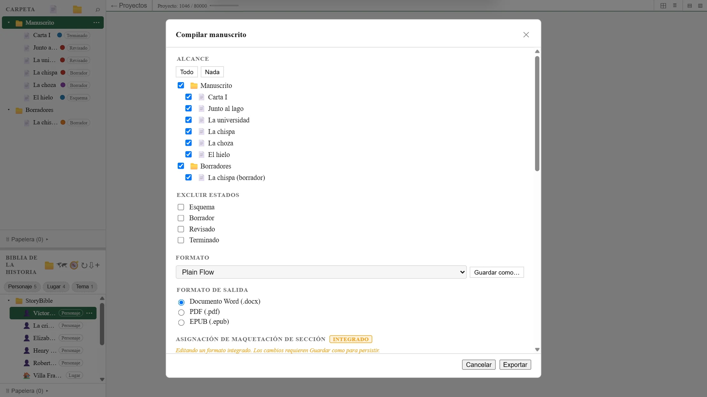
Repeticiones contadas por la raíz, rima consonante y asonante, comillas angulares y comprobaciones que solo existen en español.
El vídeo se reproduce desde YouTube, que solo se carga cuando le das a reproducir. Verlo en YouTube
La interfaz, el corrector, la gramática, los sinónimos, las comprobaciones de repeticiones y de rimas y las voces de lectura funcionan en los dos idiomas. Cada documento tiene su propio idioma, así que una novela en español tiene comillas españolas, partición de palabras española y revisiones en español aunque tengas los menús en inglés, y al revés.
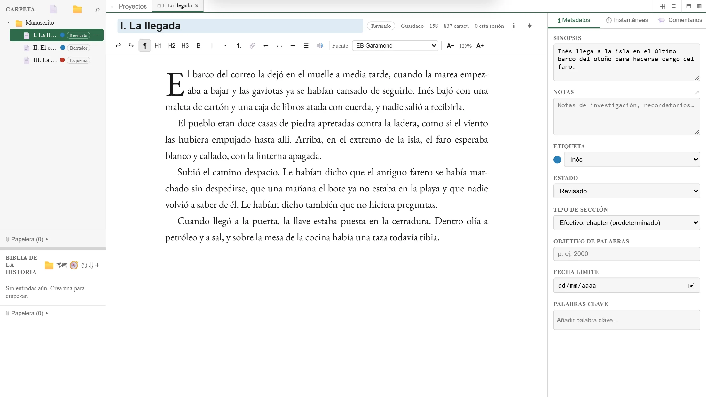
Dos partes de Corylus usan IA. Las dos están apagadas hasta que las instalas, y todo lo anterior funciona sin ellas.
El asistente que funciona en tu ordenador, y cómo se conecta a un proyecto una aplicación de IA como Claude, con el permiso que tú das proyecto a proyecto. Las dos están apagadas hasta que las instalas.
El vídeo se reproduce desde YouTube, que solo se carga cuando le das a reproducir. Verlo en YouTube
Pídele cosas al asistente con tus propias palabras, en su panel o a través de tu acompañante, que en el vídeo aún se llama mascota. Divide el editor, cuenta cuántas palabras llevas, te dice en qué capítulos sale un nombre y te enseña qué dice un capítulo. Todo lo que cambiaría tu texto se detiene y te pregunta antes.
El vídeo se reproduce desde YouTube, que solo se carga cuando le das a reproducir. Verlo en YouTube
Un panel que responde preguntas sobre tu propio libro con un modelo Qwen3 que funciona en tu ordenador a través de Ollama. El modelo es una descarga de entre 1 y 9 GB aproximadamente, y Corylus te propone uno ajustado a la memoria de tu ordenador. En Windows puede funcionar en una tarjeta gráfica NVIDIA, AMD o Intel, que responde mucho más deprisa; Corylus descarga solo el complemento que necesita esa tarjeta. Pídele con tus palabras que abra un panel o divida el editor, y lo hace. Todo lo que cambiaría tu texto se detiene y te pregunta antes. También puedes hablar con él a través de tu acompañante, un personaje que vive en una ventanita propia y está apagado hasta que lo activas.
Si usas una aplicación de IA compatible con MCP, como Claude Desktop o Claude Code, puedes dejar que lea tu proyecto y, si se lo permites, que lo edite. Lo decides proyecto a proyecto: nada, solo lectura, preguntar antes de cada cambio o cambiar con libertad. Corylus saca una instantánea antes de cada cambio y lleva un registro desde el que puedes deshacer cualquiera. Lo que esa aplicación lee va a su propio servicio, con sus propias condiciones.
No hay nada en lo que registrarse. Corylus no tiene cuentas y nunca te pide que crees una.
La gramática, las voces naturales y el asistente son descargas opcionales. Una vez instalados funcionan en tu ordenador, y el texto que revisan, leen o consultan se queda ahí.
La sincronización, si la activas, envía el proyecto a la cuenta en la nube que elegiste. Algunas voces del sistema funcionan por internet, y la lista las marca como «(en línea)». Corylus comprueba si hay versión nueva al arrancar, y eso se desactiva en los Ajustes. Las descargas opcionales vienen de los servidores de quien las publica. Si conectas una aplicación de IA como Claude Desktop, lee lo que tú le permitas, proyecto a proyecto. Si pulsas «Enviar diagnóstico», un informe va a un servicio que gestiona el desarrollador de Corylus; la página de privacidad dice qué lleva.
Markdown, con una cabecera YAML breve al principio de cada archivo. Cualquier editor de texto lo abre.
Ajustes → Acerca de → «Enviar diagnóstico» te pregunta qué ha pasado, con tus palabras, y se lo manda al desarrollador de Corylus junto con los registros del programa. No sale nada hasta que pulsas el botón, y antes la ventana te avisa de que puede ir algo de tu propio texto.
Cómo contarle a Corylus qué ha fallado: qué lleva un informe, qué no lleva nunca y qué pasa cuando no se puede enviar.
El vídeo se reproduce desde YouTube, que solo se carga cuando le das a reproducir. Verlo en YouTube
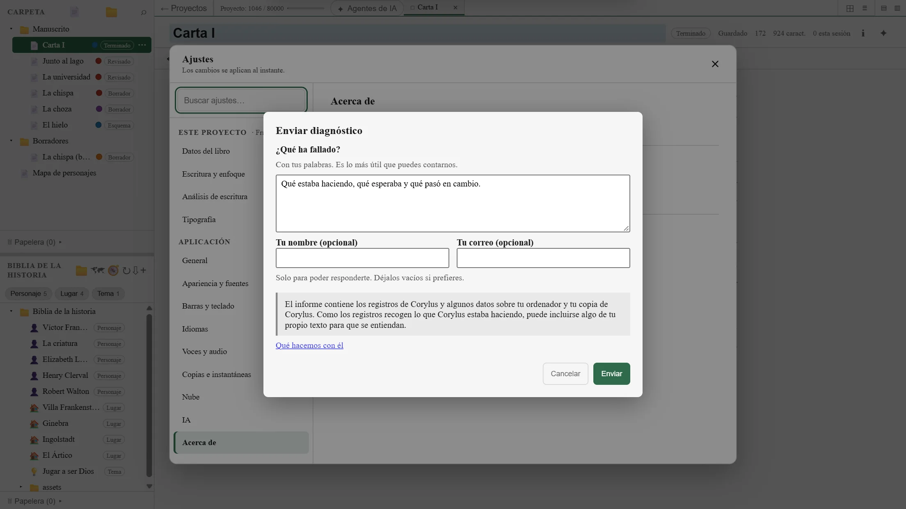
Soy Ludo Bermejo y hago Corylus yo solo. Dirijo equipos de software y escribo ficción. Mi relato de ciencia ficción «Azul» ganó el Premio Domingo Santos 2023, que concede la Asociación Pórtico; el fallo se anunció en la HispaCon. Corylus es el programa que me hice para escribir mis propias novelas.
Corylus es gratis, y todas sus funciones están en la versión gratuita. Lo hace una sola persona. El apoyo en Ko-fi paga los certificados que permiten instalarlo sin avisos y las cuentas de tienda que necesitan las versiones para móvil. Después, paga tiempo.
El programa de desarrolladores de Apple. Quita el aviso de «no se puede verificar al desarrollador» en el Mac, y es lo que lleva las versiones de iPhone y iPad a la App Store.
Un certificado de firma para Windows, IVA incluido. Windows avisa de cualquier instalador de un editor desconocido; uno firmado gana confianza con cada descarga hasta que el aviso desaparece.
La cuenta de desarrollador de Google Play (25 $), que la versión de Android necesita para llegar a la tienda.
Corylus se hace en las horas que deja libres otro trabajo.
De vez en cuando grabo lo que he hecho, lo que se ha roto y lo que todavía no va bien. El último:
De la 1.94 a la 1.96.2. El vídeo de detrás de la página en el modo sin distracciones podía congelarse, o quedarse en su último fotograma. Atraparlo costó tres versiones.
El vídeo se reproduce desde YouTube, que solo se carga cuando le das a reproducir. Verlo en YouTube
Descargar para Mac Descargar para Windows
Corylus ya funciona en iPhone, iPad y Android: la misma aplicación, abriendo las mismas carpetas de proyecto. Todavía no puedo repartir esas versiones, porque la App Store y Google Play piden cuentas de desarrollador que aún no tengo. Pagarlas es parte de lo que cubre el apoyo en Ko-fi.
Corylus todavía no está notarizado por Apple, así que la primera vez que lo abras macOS te dirá que no puede verificar al desarrollador. Haz clic derecho en Corylus.app, elige Abrir y después Abrir otra vez. En macOS 15 o posterior, ve a Ajustes del Sistema, entra en Privacidad y seguridad y pulsa Abrir igualmente. Solo hace falta una vez por descarga.